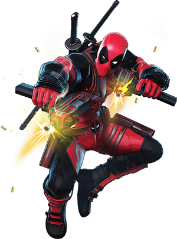
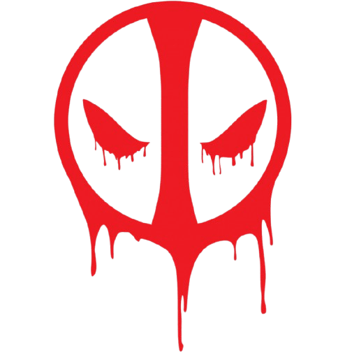
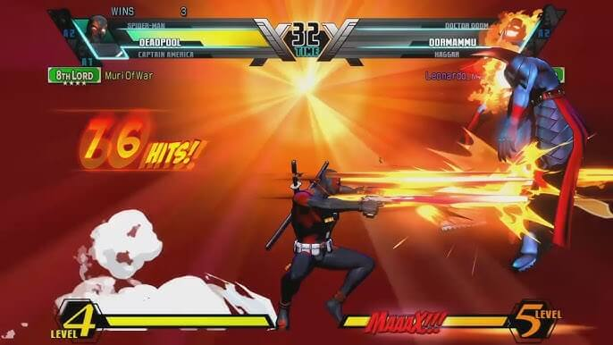
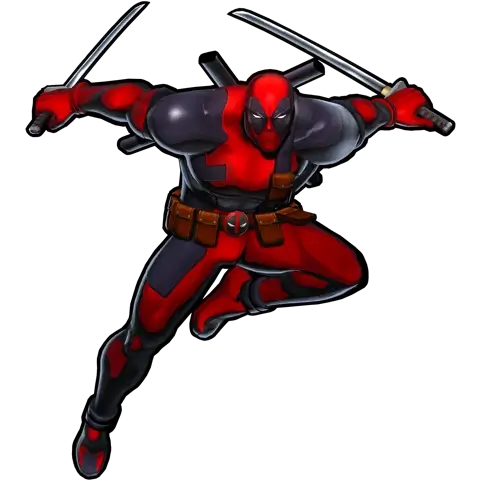
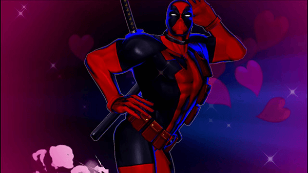

Marvel vs. Capcom 3: Deadpool
Deadpool, el mercenario favorito de los fans, fue incluido en Marvel vs. Capcom 3: Fate of Two Worlds como uno de los personajes jugables del universo de Marvel. Su inclusión fue celebrada por capturar perfectamente su estilo único y rompedor de la cuarta pared, lo que lo distingue de otros luchadores.
Durante los combates, Deadpool utiliza su arsenal característico: pistolas, katanas y granadas, todo combinado con movimientos especiales llenos de humor. Un detalle destacable es su capacidad para hablar directamente al jugador, algo que ningún otro personaje hace, aportando un nivel extra de interacción y entretenimiento.
Sus movimientos incluyen:
Bang Bang!: Disparos rápidos con sus pistolas.
Chimichanga Time: Una serie de ataques rápidos y sarcásticos.
Happy Happy Trigger: Una ráfaga de disparos de largo alcance.
Shoryuken con pancarta: Un ataque ascendente con un cartel que dice "THIS IS MY SHORYUKEN!"

Deadpool también utiliza movimientos especiales como “4th Wall Crisis”, donde literalmente golpea a sus oponentes con la barra de vida en pantalla, rompiendo los límites del juego.
Galería de Deadpool


